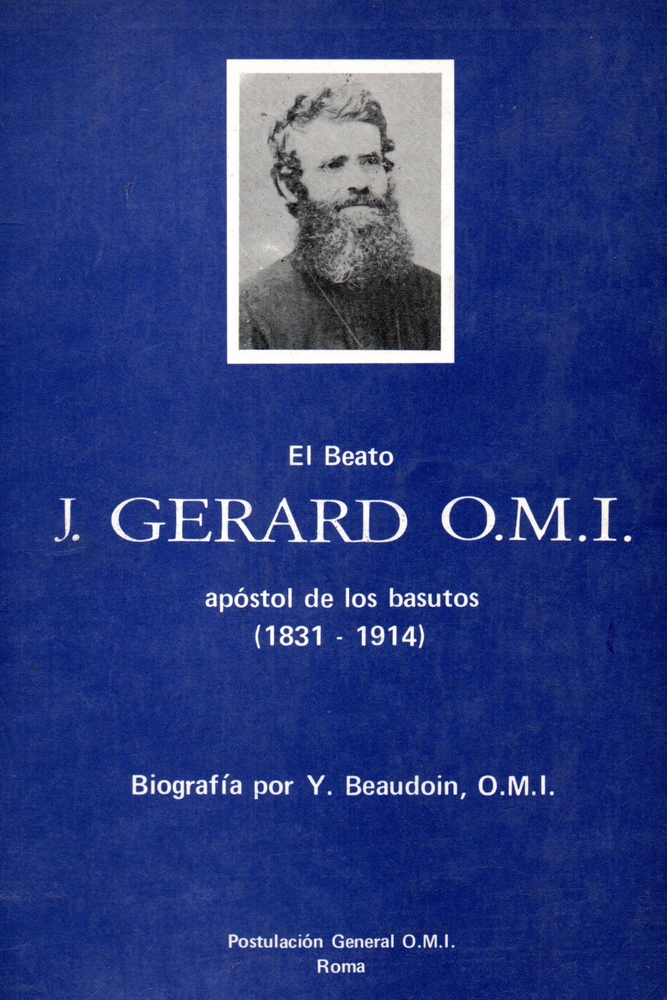

Indice General
Indice BiblioOMI

Indice
Cronología
I. Infancia y juventud (1831 - 1853)
II. Con los zulúes de Natal (1854 - 1862)
III. En el pueblo de la Madre de Jesus (1862 - 1875)
IV. En la misión de santa Mónica (1876- 1897)
V. Misionero en Roma (1887 - 1914)
VI. El misionero. el hombre de Dios